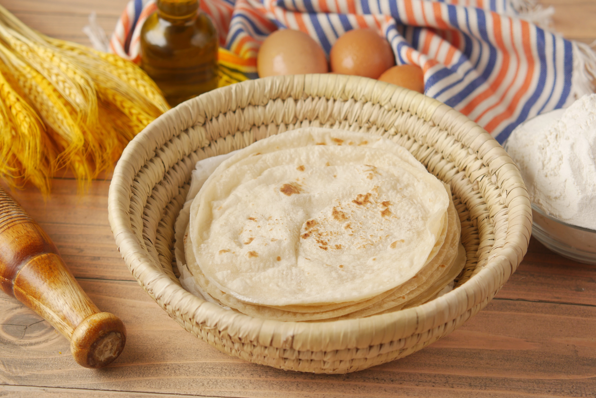

Chapati(East African Bread) Recipe

Description
Chapati is a type of bread that was adopted from the Indian Cuisine. It goes well with African stews and also tea (personally).
This dish takes about an hour or two to prepare.
Ingredients
- 2 cups of all-purpose flour.(Sifted)
- 1 teaspoon of salt
- 2 teaspoons of sugar
- 3/4 cup of warm water
- 1/4 cup of cooking oil (Or melted Cowboy)
Steps
- Mix one teaspoon of oil, the salt, sugar and flour into a wide basin
- Slowly add warm water into the mixture while still mixing
- You can add more flour while mixing so you can form a smooth dough
- Cover the bowl and let the dough rest for about 1 hour
- After 1 hour, add two tablespoons of oil to the dough and mix
- Roll the dough using a roller and cut it into pieces. Make balls using the pieces and roll them one by one, forming a circular shape
- Fry them and put in an airtight bag so they cannot dry up
- Best served with beef stew.